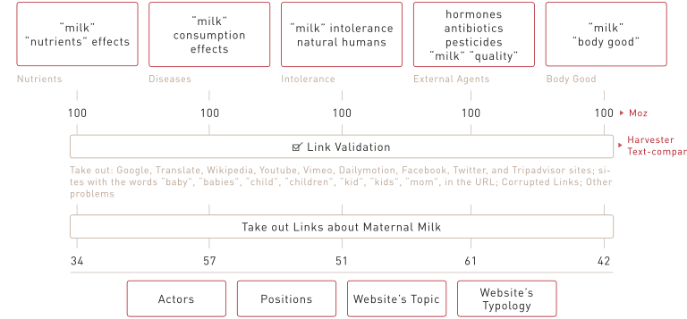

Protocol

The motivations related to Health, that have come up from the first chapter, are Nutrients, Diseases, Intolerance, Hormones, Chemical Agents, Fitness. They have been the base for the determination of 5 corresponding queries:
- Nutrients: “milk” “nutrients” effects
- Diseases: “milk” consumption effects
- Intolerance: "milk" intolerance natural humans
- External agents: hormones antibiotics pesticides "milk" "quality"
- Body good: "milk" "body good"
The 5 queries are typed in the incognito mode of Google Chrome. In the settings of google.com/ncr the instant has been removed and the results have been increased to 100. The first 100 links have been exported with Moz, an extension of Google Chrome.
First they are validated with Harvester, deleting the links from:
wikipedia, youtube, vimeo, dailymotion, facebook, twitter, translate, google, baby, babies, child, children, tripadvisor, kid, kid, mom
Then the articles related to Human Milk are deleted, because belonging to a different controversy, as well as the ones related to Milk Alternatives, that are outside the focus of Health. The further comparison in Text Compare between the outputs of Harverster and Moz, allows to keep the original titles of the links obtained.
So it’s created a dataset with the job of the authors, their position regarding the controversy, the emerging topic of the websites and the typology of them, leveled up with Open Refine.